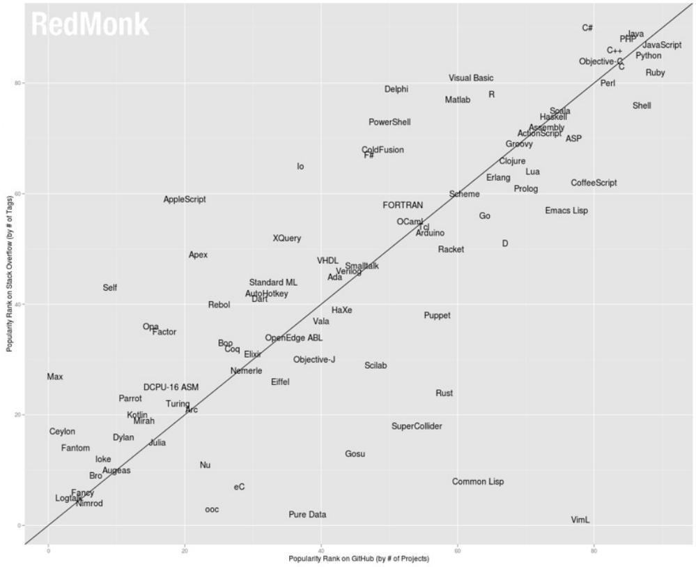
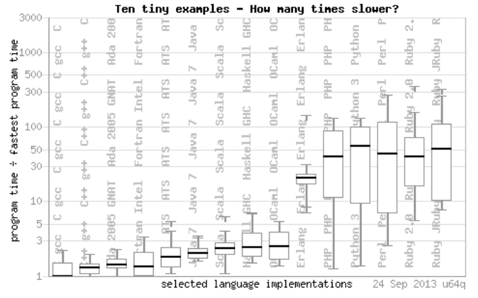

ELO320 - Estructuras de Datos y Algoritmos
Introducción a C
Marie González-Inostroza
¿Por qué es C tan relevante?
- Diseñado para desarrollar UNIX OS.
- Maneja actividades de bajo nivel (en la memoria), a pesar de ser un lenguaje de alto nivel.
- Se relaciona eficientemente con instrucciones de máquina.
- Perdura su uso en el tiempo.
- La mayoría de software tiene una relación directa o indirecta con
Métodos de Implantación
- Compilación: (e.g. C, C++)
Traduce a lenguaje de máquina para posterior ejecución (interpretación directa por el procesador). - Interpretación: (e.g. LISP, Python)
Una máquina virtual interpreta directamente el código fuente durante la ejecución. - Híbrido: (e.g. Java, C#)
Se compila a un lenguaje intermedio, que luego es interpretado.
Uso de Código en C
- Modularización: descomponer programas en unidades de desarrollo más pequeñas (módulos).
- Compilación Separada o Independiente: Módulos de un programa se pueden compilar por separado (bibliotecas).
- Reutilización: Módulos y clases se pueden reutilizar para diferentes programas.
Popularidad de Lenguajes (stackoverflow, redmonk)
Rendimiento de Lenguajes
Aprendamos C
¡Comencemos a programar en C!
C Estructura general
- Requiere un método de inicio de ejecución: main
#include
int main() {
printf("Hola Mundo\n");
return 0;
}
if __name__ == "__main__":
print("Hola Mundo!")
Actividad 2.1: Hola Mundo
Objetivo: Familiarizarse con la sintaxis básica de C.
En parejas, escriban un programa en C que imprima "Hola Mundo" en la consola.
Utiliza el código de la actividad en Github Classroom: https://classroom.github.com/a/jF6QnLFI
Compilación: gcc
- C es un lenguaje compilado, esto significa que:
- Su código es transformado, a través de un compilador, a lenguaje máquina.
- El resultado de la compilación es un binario ejecutable.
- Binarios ejecutables: .bin, .exe, .appinstall, etc.

Compilación: gcc
Compilación: gcc
Compilación directa
[user@pc dir]$ gcc -o ejecutable codigo1.c codigo2.c -Wall
- -o (output): indica que lo siguiente es el nombre del ejecutable.
- codigoX.c: es el archivo de nuestro código (puede ser más de uno).
- -Wall: indica al compilador que de aviso de potenciales peligros (warnings).
Tipificación de Datos
Explícita (C):
- Siempre detecta errores de tipo.
- Restricciones sobre operaciones y valores de diferentes tipos.
- No hay ejecución si tipos son erróneos o incompatibles.
- Tipificación estática y explícita.
Implícita (Python):
- Conversiones que permiten relajar restricciones.
- Flexibilidad y agilidad.
- Genera errores no detectados.
Tipos de datos en C
- Define el tipo de dato de cada variable antes de usarlas (tipificación explícita):
#include
int main() {
int a;
float d;
int b = 5, c = 6;
printf("%d\n", b+c);
return 0;
}
- En Python, los tipos de datos se infieren de la asignación (tipificación implícita).
Tipos de datos primitivos en C
| Descripción | C | Python |
|---|---|---|
| Booleano | bool | bool |
| Byte | char | int |
| Caracter | char | str |
| Entero corto | short | int |
| Entero | int | int |
| Entero largo | long | long |
| Punto flotante | float | float |
| Pto. flotante largo | double | float |
| String | - | str |
| Complejos | - | complex |
Tipos de datos primitivos en C
| tipo | bytes | Rango |
|---|---|---|
| char | 1 | -127 to 127 or 0 to 255 |
| unsigned char | 1 | 0 to 255 |
| signed char | 1 | -127 to 127 |
| int | 4 | -2147483648 to 2147483647 |
| unsigned int | 4 | 0 to 4294967295 |
| signed int | 4 | -2147483648 to 2147483647 |
| short int | 2 | -32768 to 32767 |
| unsigned short int | 2 | 0 to 65,535 |
| signed short int | 2 | -32768 to 32767 |
| long int | 4 | -2,147,483,647 to 2,147,483,647 |
| signed long int | 4 | same as long int |
| unsigned long int | 4 | 0 to 4,294,967,295 |
| float | 4 | +/- 3.4e +/- 38 (~7 digits) |
| double | 8 | +/- 1.7e +/- 308 (~15 digits) |
| long double | 8 | +/- 1.7e +/- 308 (~15 digits) |
Entrada Estándar: scanf
Función de entrada estándar, compuesta de una sección de especificadores y otra sección de variables, a la que se les asignará un valor obtenido desde pantalla.
int a;
char c;
char nom[10];
double prec;
scanf("%d", &a); //lee un entero
scanf("%c", &c); //lee un char
scanf("%s", nom); //lee un string
//lee un double, un string y un entero.
scanf("%lf %s %d", &prec, nom, &a);
Salida Estándar: printf
Función de salida estándar, compuesta de una sección de especificadores y otra de variables, cuyos valores se mostrarán por pantalla.
printf("%d", a); //imprime un int
printf("%c", c); //imprime un char
printf("%s", nom); //imprime un string
//imprime un double de 3 decimales, un string y un entero.
printf("%.3lf %s %d", prec, nom, a);
Especificadores
Las funciones de I/O de C utilizan especificadores para identificar el tipo de dato a leer o imprimir:
| Tipo | Especificador |
|---|---|
| char | %c |
| int | %d %i |
| unsigned int | %u |
| float | %f %.3f |
| string | %s |
| double | %lf |
| long int | %ld |
| long long unsigned int | %Lu |
Actividad 2.2: Uso de tipos básicos
Objetivo: Utilizar tipos básicos de C
En parejas, escriban un programa en C que pida datos en consola y los imprima.
Utiliza el código de la actividad en Github Classroom: https://classroom.github.com/a/hBOlOpd5